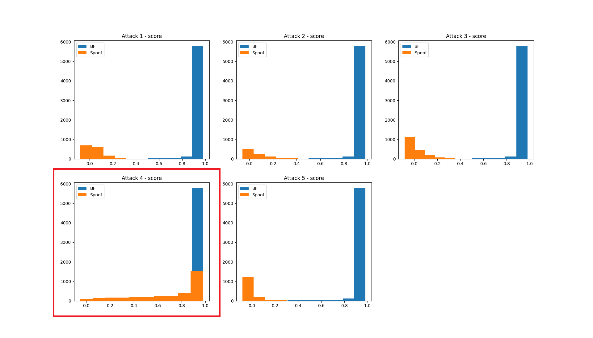
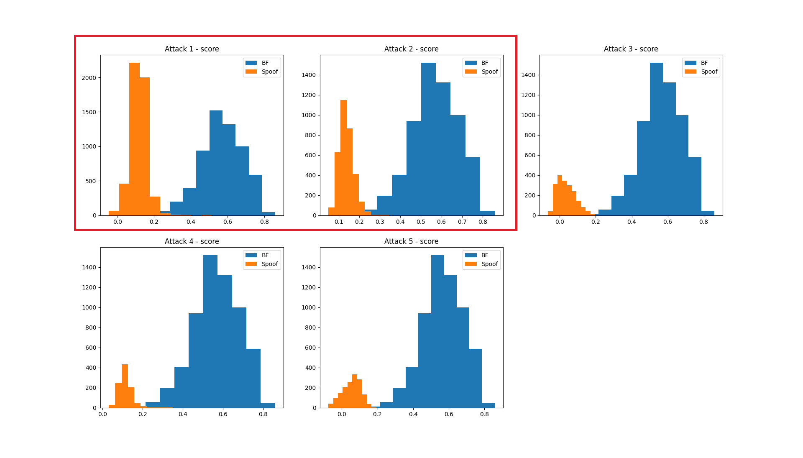

This is an overview of the progress of diploma thesis aimed at developing a tool for detecting spoofed speech in Czech.
Author: Bc. Jiří Šmíd, Faculty of Elecrical Engineering, Czech Technical University in Prague, smidjir5@fel.cvut.cz
Thesis supervisor: Doc. Ing. Petr Pollák, CSc. Faculty of Elecrical Engineering, Czech Technical University in Prague, webpage
With the advancement of machine learning and artificial intelligence tools, there has also been significant progress in text-to-speech (TTS) and voice conversion (VC) technologies, which can replicate a target voice. These technologies are often exploited—frequently in combination with deepfake videos—for various fraudulent activities targeting businesses, politicians and ordinary individuals. The aim of this thesis is to evaluate the capability of a model trained on English or Chinese—languages for which datasets containing both genuine and spoofed speech are available—and to develop the first, or one of the first, tools for detecting such machine-generated speech in the Czech language.
In order to develop and train such a tool and to evaluate models trained in English, it is first necessary to create a dataset containing both natural and spoofed Czech speech. More details can be found here.
Examples of fraud involving speech spoofing and deepfakes can be found here
Webpage work in progressThis section describes
The One-Class Softmax (OC-Softmax) loss function enhances spoofing detection in automatic speaker verification (ASV) systems by compacting bona fide speech embeddings while pushing spoofed speech representations away. Instead of treating spoofed and bona fide samples as separate classes, OC-Softmax defines a hypersphere centered around bona fide embeddings and enforces a margin to separate them from outliers. During training, a cosine-based decision boundary ensures that bona fide speech remains within a constrained region, while spoofed speech is pushed beyond a threshold margin. The network structure consists of a CNN-based feature extractor, followed by an embedding layer, where OC-Softmax optimizes the distance between bona fide and spoofed embeddings. A radius-based decision function determines whether an input belongs to the bona fide class, enabling the model to detect previously unseen spoofing attacks without requiring spoofed training data. This approach improves generalization, robustness, and security in ASV systems. [Automaticaly compiled from Arxiv]
There are two possible approaches for classification with this model: Binary Classification – This approach utilizes the last layer with two neurons, applying softmax or argmax for decision-making. Not recommended when using OC Softmax, as this layer is not utilized during the training stage. Recommended when using the traditional approach with Cross-Entropy loss. One-Class Loss – This method leverages the penultimate fully connected layer, where a one-class loss function is used during training to compute a score. Based on the evaluation dataset (or any other relevant criteria), a classification threshold can be determined. Additionally, it is possible to estimate probabilities or confidence scores for classification decisions.
Metrics computed from last classification layer:Metrics calculated from OC softmax score:
The goal of the first experiment was to evaluate the model's ability to generalize to a different language dataset than the one it was trained on. The dataset described above was used with a pretrained network from the ASVspoof 2019 dataset, employing a one-class loss function. The entire SP Spoof CS dataset was utilized for this evaluation.
| Treshold ideal | -0.94 |
|---|---|
| EER ideal | 0.41 |
| --- | |
| Treshold from dev | -- |
| EER | -- |
| FPR | -- |
| FNR | -- |
| Tool | EER ideal* | ER** |
|---|---|---|
| Bonafide | 0.208 | -- |
| XTTS | 0.210 | -- |
| FVC | 0.000 | -- |
| kNN VC | 0.347 | -- |
| Seed VC | 0.268 | -- |
| Diff-Hier VC | 0.125 | -- |
* threshold computed from test dataset, so FPR and FNR would be same
** Error rate - FPR for bonafide, FNR for spoof. Treshhold computed from development dataset - more realistic for usage
| Treshold ideal | 0.406 |
|---|---|
| EER ideal | 0.0089 |
| --- | |
| Treshold from dev | 0.776 |
| EER | 0.015 |
| FPR | 0.029 |
| FNR | 0.001 |
| Tool | EER ideal* | ER** |
|---|---|---|
| Bonafide | 0.005 | 0.029 |
| XTTS | 0.002 | 0.001 |
| FVC | 0.009 | 0.001 |
| kNN VC | 0.006 | 0.001 |
| Seed VC | 0.009 | 0.001 |
| Diff-Hier VC | 0.000 | 0.000 |
* threshold computed from test dataset, so FPR and FNR would be same
** Error rate - FPR for bonafide, FNR for spoof. Treshhold computed from development dataset - more realistic for usage
This experiment demonstrates that the model's structure is capable of rapid fine-tuning, requiring only two epochs to achieve promising results. The evaluation was conducted on a randomly split dataset, where all types of attacks and all source datasets were included across the train, development, and test subsets. So for the seen attacks it provides promising results.
The goal of this experiment was to modify the previous setup by introducing an unseen attack (a new TTS/VC tool) into the test dataset. To achieve this, utterances generated by Seed VC were included only in the test set. The remaining utterances were randomly split using the same ratio as in the previous experiment (60% train, 10% dev, 30% test).
| Treshold ideal | 0.934 |
|---|---|
| EER ideal | 0.116 |
| --- | |
| Treshold from dev | 0.509 |
| EER | 0.143 |
| FPR | 0.011 |
| FNR | 0.275 |
| Tool | EER ideal* | ER** |
|---|---|---|
| Bonafide | 0.058 | 0.011 |
| XTTS | 0.0 | 0.010 |
| FVC | 0.0 | 0.017 |
| kNN VC | 0.0 | 0.007 |
| Seed VC | 0.161 | 0.75 |
| Diff-Hier VC | 0.0 | 0.000 |
* threshold computed from test dataset, so FPR and FNR would be same
** Error rate - FPR for bonafide, FNR for spoof. Treshhold computed from development dataset - more realistic for usage
These results indicate overfitting to known types of attack. After only two epochs with a very low learning rate, the model is able to classify known attacks, but its performance on unseen attacks is significantly worse. This issue is evident in the histograms below, where the OC scores of the unseen attack (Seed VC) overlap with the bona fide scores, highlighting the model's inability to distinguish between them effectively.
In this experiment One-class loss function was enhanced. The proposed loss function introduces an uncertainty-aware penalty for speech spoof detection by applying a softplus-based regularization to output scores within a predefined margin around the decision boundary. Specifically, predictions that fall between the thresholds r_fake-margin and r_real+margin are penalized using a scaled softplus function, encouraging the model to make more confident predictions. Outside this uncertain region, no additional loss is applied. This approach enhances decision boundary sharpness while maintaining gradient stability, leading to improved robustness against ambiguous spoofed speech samples.
| Treshold ideal | 0.288 |
|---|---|
| EER ideal | 0.065 |
| --- | |
| Treshold from dev | 0.197 |
| EER | 0.136 |
| FPR | 0.005 |
| FNR | 0.268 |
| Tool | EER ideal* | ER** |
|---|---|---|
| Bonafide | 0.032 | 0.005 |
| XTTS | 0.0 | 0.0007 |
| FVC | 0.0 | 0.013 |
| kNN VC | 0.0 | 0.003 |
| Seed VC | 0.09 | 0.740 |
| Diff-Hier VC | 0.0 | 0.001 |
* threshold computed from test dataset, so FPR and FNR would be same
** Error rate - FPR for bonafide, FNR for spoof. Treshhold computed from development dataset - more realistic for usage
The results demonstrate promising performance when using a threshold calculated from the test data (ideal case). With a properly chosen threshold, this method reduces the Equal Error Rate (EER) by half. Interestingly, for spoofed scores, the score histograms remain relatively narrow, whereas for bona fide scores, the histograms broaden significantly. This suggests that the applied method affects genuine speech more than spoofed speech, leading to greater score variability in bona fide samples. Additionally, it appears that determining the threshold from the development dataset by balancing the False Positive Rate (FPR) and False Negative Rate (FNR) may not be sufficient for optimal performance.
Even though bona fide scores do not follow a normal distribution, it appears effective to set the classification threshold as: mean(bonafide_scores) - k*std(bonafide_scores) calculated from the development dataset. Adjusting k allows for fine-tuning the classification balance based on the desired objective—a more balanced classification or a higher False Positive Rate (FPR) for increased security. Below are the results for k = 1.
| Treshold ideal | 0.288 |
|---|---|
| EER ideal | 0.065 |
| --- | |
| Treshold from dev | 0.364 |
| EER | 0.096 |
| FPR | 0.180 |
| FNR | 0.014 |
| Tool | EER ideal* | ER** |
|---|---|---|
| Bonafide | 0.032 | 0.18 |
| XTTS | 0.0 | 0.000 |
| FVC | 0.0 | 0.000 |
| kNN VC | 0.0 | 0.000 |
| Seed VC | 0.09 | 0.039 |
| Diff-Hier VC | 0.0 | 0.000 |
* threshold computed from test dataset, so FPR and FNR would be same
** Error rate - FPR for bonafide, FNR for spoof. Treshhold computed from development dataset - more realistic for usage
This experiment aimed to verify whether the results from Experiment 4 were not coincidental. To test this, utterances generated by XTTS (Attack 1) and FVC (Attack 2) were included only in the test dataset, while the remaining data were divided according to the same ratio as in previous experiments. The proposed enhanced OC Softmax method was applied, along with the mean-std threshold calculation approach.
| Treshold ideal | 0.249 | |
|---|---|---|
| EER ideal | 0.004 | |
| --- | ||
| k = 1 | k = 2 | |
| Treshold from dev | 0.461 | 0.34 |
| EER | 0.081 | 0.019 |
| FPR | 0.162 | 0.039 |
| FNR | 0.00007 | 0.0004 |
| k = 1 | k = 2 | ||
|---|---|---|---|
| Tool | EER ideal* | ER** | ER** |
| Bonafide | 0.002 | 0.162 | 0.038 |
| XTTS | 0.003 | 0.0002 | 0.0001 |
| FVC | 0.002 | 0.000 | 0.000 |
| kNN VC | 0.000 | 0.000 | 0.000 |
| Seed VC | 0.002 | 0.000 | 0.001 |
| Diff-Hier VC | 0.0 | 0.000 | 0.000 |
* threshold computed from test dataset, so FPR and FNR would be same
** Error rate - FPR for bonafide, FNR for spoof. Treshhold computed from development dataset - more realistic for usage
As evidenced by the tables, the proposed method improves the classification of unseen attacks. Additionally, better score separation is observable in the histograms below, indicating enhanced discrimination between bona fide and spoofed utterances.
